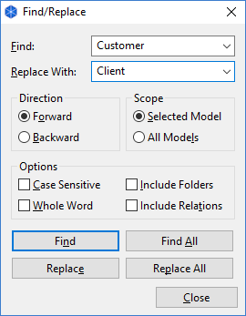

如果您从调色板中选择第一个选择工具，请单击视图上的某个位置以使其获得焦点，然后按住空格键，光标将变为手形，您可以平移视图。您还可以通过按住鼠标中键来平移视图。
可以使用计算机键盘而不是鼠标来移动视图中的选定对象并调整其大小。要移动对象，请按句点键（“.”）一次以显示移动光标。然后使用箭头键，然后按回车键提交移动。要调整对象大小，请按句点键（“.”），直到调整大小光标出现在所需的调整大小手柄处。按回车键提交调整大小。
有时您可能会发现一个概念位于视图区域之外，并且您希望在一个概念与视图区域之外的另一个概念之间建立新的联系（通常需要使用滚动条）。为此，只需在选择连接工具后单击源概念，然后将鼠标悬停在视口边缘。短暂的停顿后，视图会自动滚动。
您可以通过多种不同方式放大和缩小视图：
与缩略图视图结合使用，您可以轻松浏览大型图表。
还可以按名称查找和替换视图中的概念。
查找和替换对话框